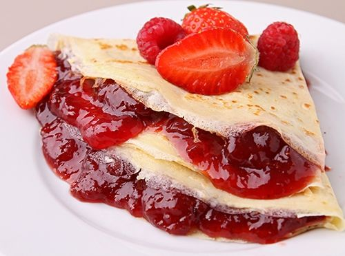

Elaboration
1.Place the strawberries, water and sugar in a pan and bring to the fire until the strawberries are softened.
2.LICUATE crepe ingredients and refrigerate for 30 minutes
3.POUR into a hot pan a little mixture of crepes, spread, turn and let cook.
4.MIX Philadelphia Cream Cheese with sugar and cinnamon.
5.UNTAR crepes with Philadelphia Cream Cheese and place cooked strawberries; fold in triangle shape and decorate to taste.
